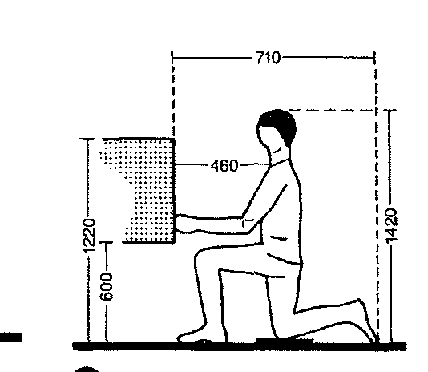
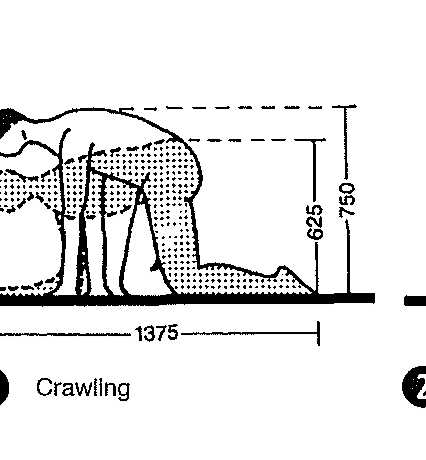
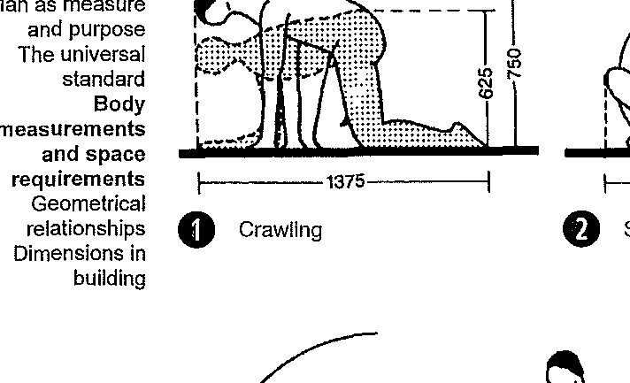

4122fb96e4bd1976-41-vision-0:1

uncertain → uncertain: Blind reading disagrees with candidate or unit
Validación automática por IA, no revisión humana.
| Estado | Antes | Después |
|---|---|---|
| uncertain | 61 | 61 |
| corrected | 1 | 0 |
| verified | 0 | 1 |
{
"before": {
"uncertain": 61,
"corrected": 1
},
"after": {
"uncertain": 61,
"verified": 1
},
"chapters": {
"BASICS": {
"uncertain -> uncertain": 60,
"uncertain -> verified": 1,
"corrected -> uncertain": 1
}
},
"warnings": [
"Same model as first pass; independent cropped prompt only."
]
}
uncertain → verified: Blind reading agrees with current value

uncertain → uncertain: Blind reading disagrees with candidate or unit
uncertain → uncertain: Blind reading disagrees with candidate or unit

uncertain → uncertain: Blind reading disagrees with candidate or unit

uncertain → uncertain: Blind reading disagrees with candidate or unit